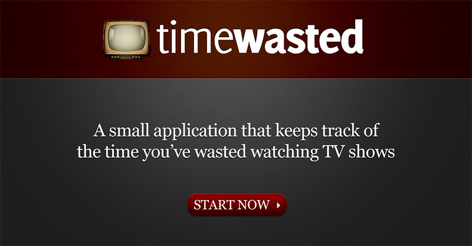
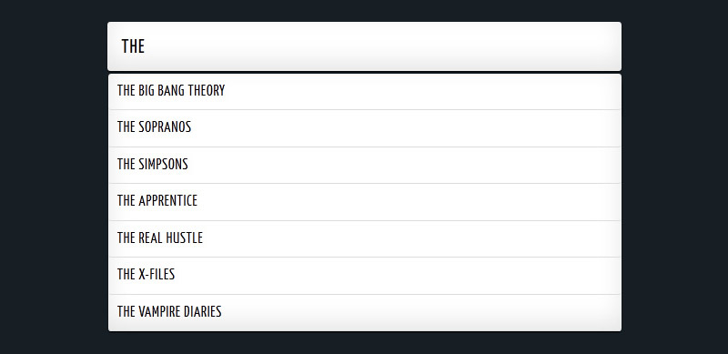
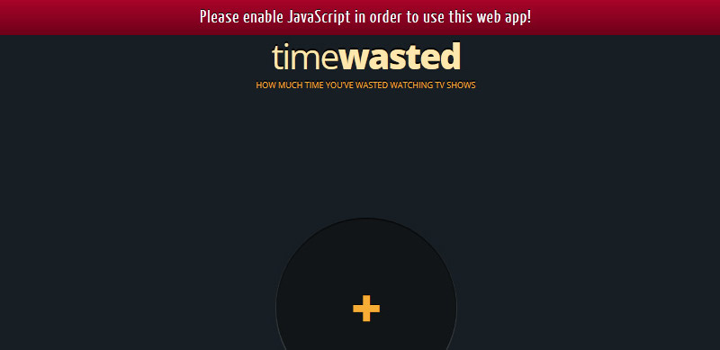
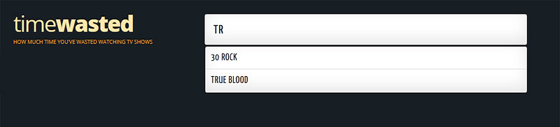

![sicanstudios logo]()
TimeWasted
TimeWasted is a web app that calculates how much time you’ve wasted from your life watching TV shows.
Concept Idea
I wanted to create a web application that would look awesome on the iPhone and iPad. Web apps are popular these days because they look great on any device or OS, and you’re not required to submit the app to a certain store and wait for approval.
This has several advantages some of which: you get all the profit from the app (if you decide to charge for using it), the user always interacts with the newest version; she’s no longer required to update, and the user doesn’t have to install anything.
The idea for the app came to me from all these productivity and time management tools that calculate how much time you’ve spent on a task, like Basecamp. Why not have a calculator that shows you how much time you’ve wasted watching TV shows?
{kind=link}
Time flies and we are often unaware of it when we’re watching TV shows. Slowly, with time, the total amount spent on TV shows adds up to days, even weeks. By seeing the time spent on TV shows on a calculator, maybe you will reduce the time you spend on watching TV shows. Even better, you may decide to spend your time on something else, like starting your own business, improving your craft, or reading a book.
For some time now, I’ve been wanting to create this app. It wasnt’t until November 2011, that I got a chance to begin working on it. Here’s the initial design that I had drafted back then:

For the design of the web app, I had to create something simple and easy to use. It should load fast, therefore not too many elements were included. Along with clear functionality, the app should also look nice. For the iPhone, the maximum amount of screen estate should be used to display the TV shows.
iPhone and iPad
The web app was optimised for the iPhone and the iPad. Several elements were included and excluded from the devices accordingly.
{kind=link}
On first load, an “add to homepage” popup would appear once, telling the user to add this web app to their home screen. A separate iOS icon was created for this instance.
If the user is browsing from an iPhone, using JavaScript, I hide the mobile Safari browser’s address bar to create more room for the application interface. On mobile devices, social buttons were disabled from loading to save bandwidth and only the “Tweet my results” button was kept.
Each device is served a different design (responsive design). For the iPhone and iPad, the add-TV-show page has a big central input section, and it doesn’t display the app logo or any additional info. For the iPhone, a single column design is prominent throughout the app. On the desktop, the shows are displayed in three separate columns.
The method of having a fixed element and a scrollable container, doesn’t work on iOS devices. Therefore, I used a handy JS plugin called iScroll. The problem I encountered was that I couldn’t fetch new data with AJAX and refresh the iScroll to work properly with the new content. That’s why the app has three different pages. I would prefer a single page without refreshing, using AJAX to fetch additional content behind the scenes.
The issue, of fixed element and scrollable container, explained in the previous paragraph is solved on iOS5 and above. It works, without the need for additional plugins or hacks. But in order to make the app accessible for iOS4 and iOS5 users, I had to guess what iOS was being used and serve them with different content. I wrote about the snippet in this blog post: Different content or CSS depending on iOS version.
Aside from the portrait version, the app also has a landscape version. Using CSS3, the design is altered accordingly to accommodate for more space. Additional text was added to some elements. For example the button which adds a TV show to the list, in portrait mode it says “Add this” and in landscape mode it says “Add this TV show”.
{kind=link}
Production
For the development of this app, I decided to use the latest technologies available at that time: HTML5 and CSS3. Using HTML5 Boilerplate as the backend of this web app had many advantages. One of which was that the browsing experience degraded gracefully in browsers that don’t yet support this technology.
Along with PHP, the app relies heavily on jQuery and AJAX in order to work. Whilst the user types in their favourite shows, a dropdown with all the available shows appears. The user can select one from the list or continue typing to refine the result.

The app displays how much time was wasted, by multiplying the total number of shows and the number of seasons for each show inputted by the user. It searches the database for the show and multiplies the number of seasons with the episodes per season (average) times the runtime (minutes) for each episode (seasons x episodes x minutes). It then takes the total minutes and divides them into “Days”, “Hours” and “Minutes”.
In order to make app load faster, the number of connections to the database was reduced to one. All the details are then passed using POST method to the other pages. The calculations are made by PHP on the fly, from the details included in the POST. The images of each TV show on the results page are displayed by simply removing the spaces from the title of the show.
Error checking
Error checking is an important part of any project. It’s like having a proofreader. Because there is interaction with the user, all possibilities were accounted for. If the user has JavaScript disabled, a notification appears at the top, asking the user to enable JS in order to use the web app.

The user is not allowed to advance if they forgot to introduce a TV show or didn’t select a number of seasons. Moreover, if they directly accessed the results page, they are redirected to the home screen to go through the process of adding a TV show to the list first.
When adding a TV show, if the show they typed is not in the database, a message is displayed in the dropdown list saying “ I couldn’t find the TV show”. This is a so-called soft notification. No popup or erasing what the user has typed until now. In case the user selects a show that already exists in the list, a popup appears saying that this show was added before to the list.
Upon selecting how many seasons of that TV show the user has watched, the entry is not added to the list automatically. The user has to click the “Add TV show” button first. The UX was created this way, in order to allow the user the option to edit the entry before adding it to the list, for example if they selected the wrong amount of seasons. I save the user from the trouble of having to delete the entry from the list, then typing it again and then selecting the correct amount of seasons watched.
Other stuff
Additional checks were made to prevent unauthorised access to database or sensitive information via PHP such as using mysql_real_escape_string().
Moreover, when typing a TV show, the app doesn’t immediately fetch the TV shows list. It waits for the user to finish typing and has a small delay from the time you finished typing until it creates a database connection. The UX was created in such way to reduce the amount of calls being made to the database.
I always admired Google for their search algorithm. You type in whatever you can think of and it comes back with meaningful results. Inspired by that, TimeWasted tries to be smart when identifying TV shows.
If you type in for example “Breaking”, the show Breaking Bad will be listed. If you type in first “Bad”, the same show will be displayed. Where I took it a step further, was in adding the main character(s)/actor(s) as a search term. So if you type in “Heisenberg”, the show Breaking Bad will appear. Similarly, if you type in “Stewie”, the TV show Family Guy will be listed.

The negative aspect of this is if the user for example types in “Tr” searching for True Blood and the TV show 30 Rock is listed as well. Makes the user wonder why it’s there (because of Tracy Jordan, a character in the show).
This was a brief insight on my first web app TimeWasted. Go ahead and check it out.